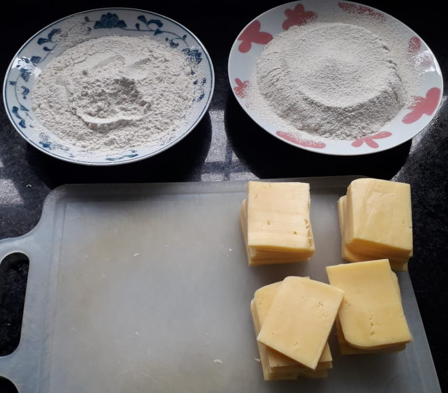
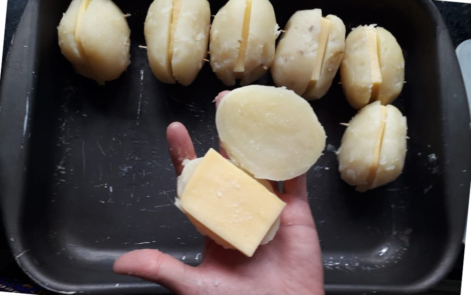
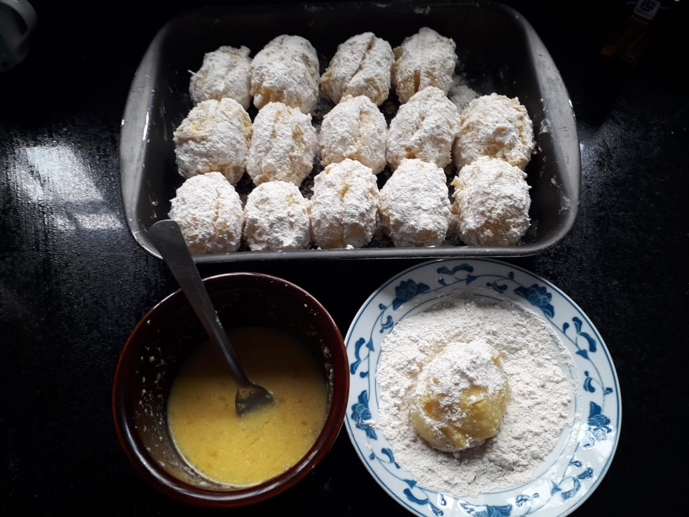
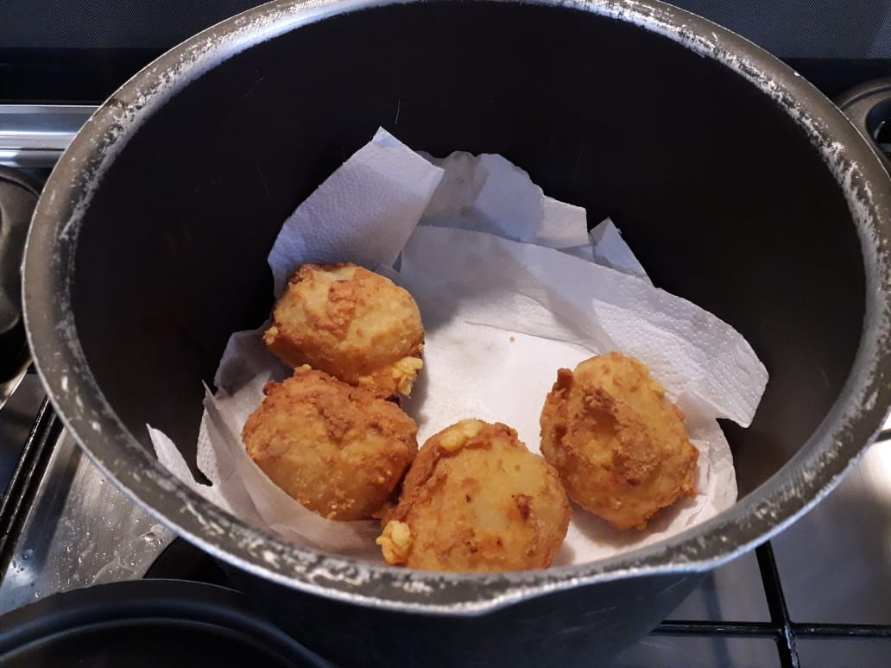

Batata Recheada
Fala galerinha, tudo bem? Hoje eu irei ensinar uma receita super especial para mim!! É a batata recheada, receita que minha vó fez pra mim por muito tempo e eu amo de coração!!! Agora que eu aprendi a fazer, quero divulgá-la para que todos possam sentir o mesmo sabor gostoso que é essa batata!!!
A receita abaixo é para fazer 25 batatas recheadas. Uma pessoa normal geralmente come entre 3 e 4 batatas recheadas!!!
Ingredientes
- 25 batatas (de mesmo tamanho e com a casca lisa)
- 500g de farinha de rosca
- 6 ovos
- 100g de queijo parmesão ralado
- 50 palitos de dente
- 350g (em peça) de queijo prato (ou muçarela)
- Sal
- 1 Rolo de papel toalha
Preparo
- Coloque as batatas para cozinhar (pode usar a panela de pressão se quiser). A batata estará no ponto exato se um palito de dente atravessar até a metade da batata facilmente.
- Dica: Caso faça a batata na panela de pressão, assim que a panela pegar pressão, desligue a panela e verifique se a batata está pronta.
- Depois de cozida, descasque a batata e reserve-a.
- Enquanto a batata cozinha, bata a farinha de rosca no liquidificador (2 minutos), para que ela fique mais fina.
- Passe a farinha de rosca batida na peneira para filtrar a farinha mais fina.
- Enquanto a batata cozinha, corte as peças de queijo em retângulos.

- Neste próximo procedimento, execute-o individualmente (batata por batata).
- Com as batatas já descascadas, corte-as ao meio, passe um pouco de sal em só um dos lados (internamente), coloque o queijo entre as metades da batata e espete-as com 2 palitos para prendê-las.

- Depois de colocar o sal, o queijo e o palito em todas as batatas, bata os ovos num recipiente, adicione o parmesão e misture bem. Se a mistura ficar muito grossa, coloque um tiquinho de água.
- Nos dois próximos procedimentos, execute-os individualmente (batata por batata).
- Utilizando apenas uma mão, mergulhe a batata no ovo até ensopá-la. Chacoalhe-a um pouco para tirar o excesso de ovo.
- Utilizando a outra mão, coloque a batata na farinha de rosca e empane-a utilizando um garfo ou uma colher.
- A ideia de usar uma mão para mergulhar a batata no ovo e a outra para empaná-la é apenas para facilitar o processo.

- Coloque óleo numa panela, de forma a cobrir metade da batata. Frite a batata de um lado, vire-a e depois frite-a do outro lado.
- Depois de frita, coloque-a numa panela com papel toalha (para deixá-la mais seca do óleo). A medida que for colocando as batatas na panela (uma em cima da outra), coloque papel toalha, de forma a criar camadas de papel toalha entre as batatas de baixo e de cima.
